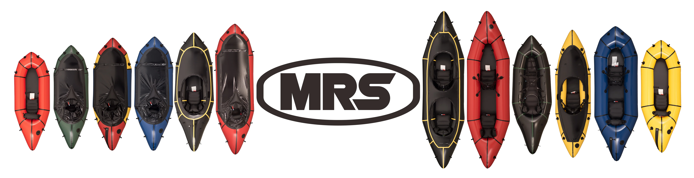

<div class="section">
    <div class="subsection">
        <!--  -->
        <h3>MRS Packrafts</h3>          
        <p>Micro Rafting Systems (MRS) packrafts is committed to manufacturing top-grade products, built and field tested for adventures near and far. From remote Idaho rapids to the lakes of the High Sierra, MRS has a boat perfectly suited for your dream trips. MRS is constantly looking for ways to make their packrafts even better, and work with athletes around the world to tweak boat designs to give you the best rafting experience.</p>
        <p>In addition to offering top-rated engineering and construction quality, MRS offers the best price points in the industry.  For these reason GAILS has partnered with MRS, as both a sales affiliate and paddling athlete.  Purchases made via the affiliate link below, help GAILS “stay afloat”, via a small commission per sale.</p>
        <a href="https://www.microrafting.com/?sca_ref=3577206.GegmKR0i6Q" class="link-wrapper" >
            
            <a href="https://www.microrafting.com/?sca_ref=3577206.GegmKR0i6Q">https://www.microrafting.com/?sca_ref=3577206.GegmKR0i6Q</a>
        </a>
    </div>

    
</div>
